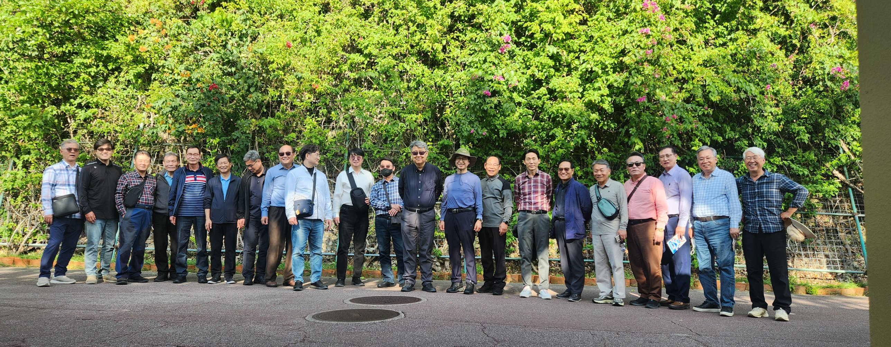
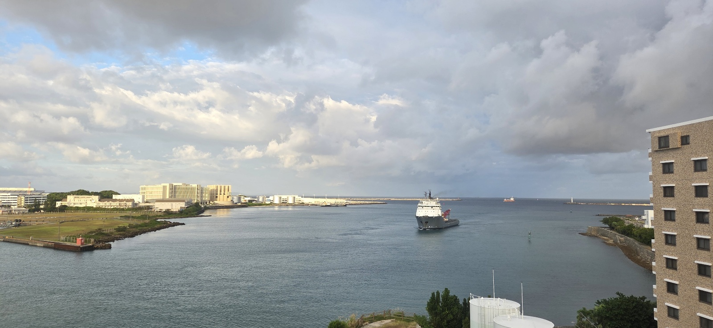
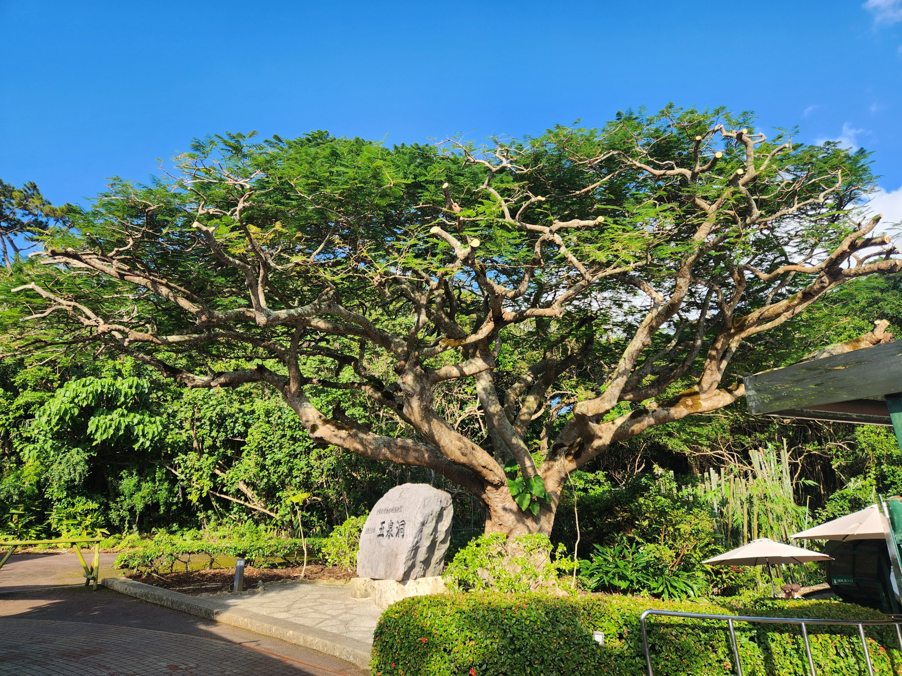
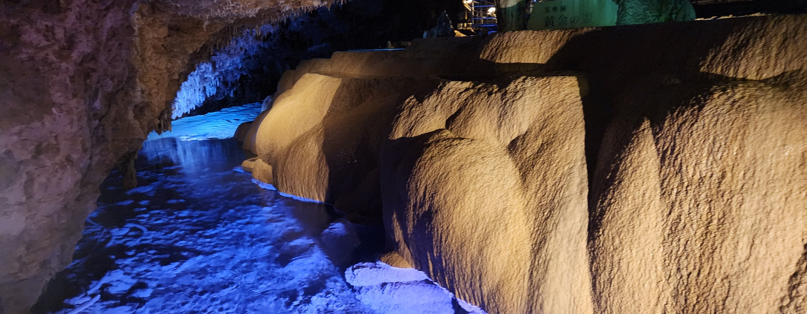
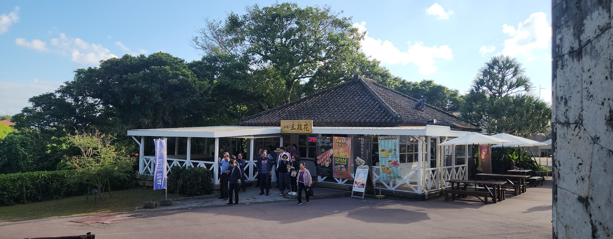
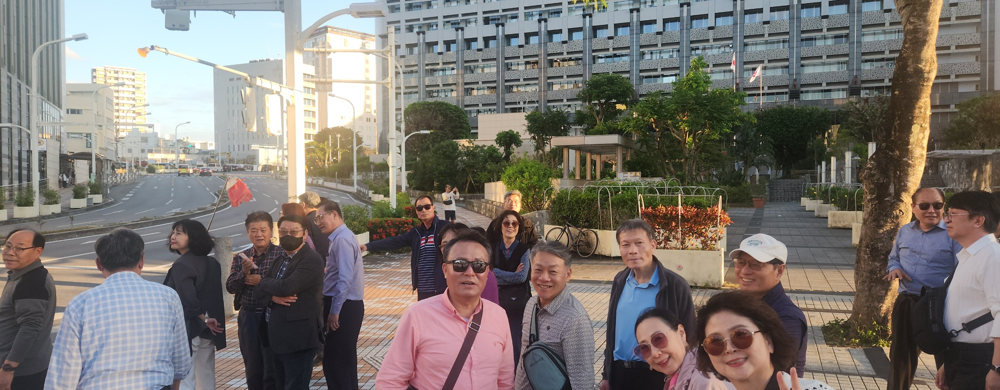
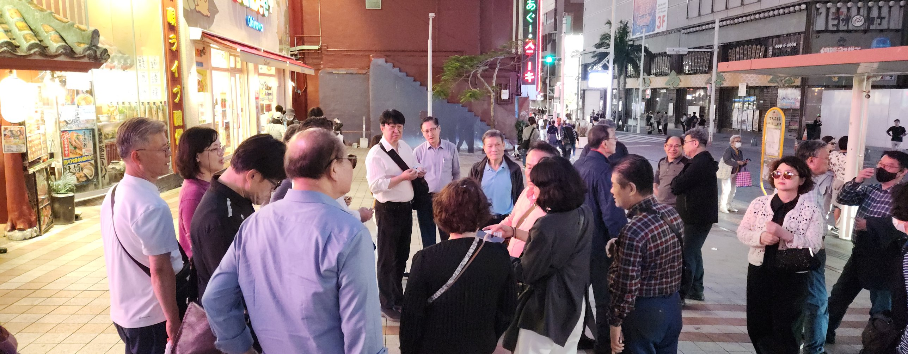
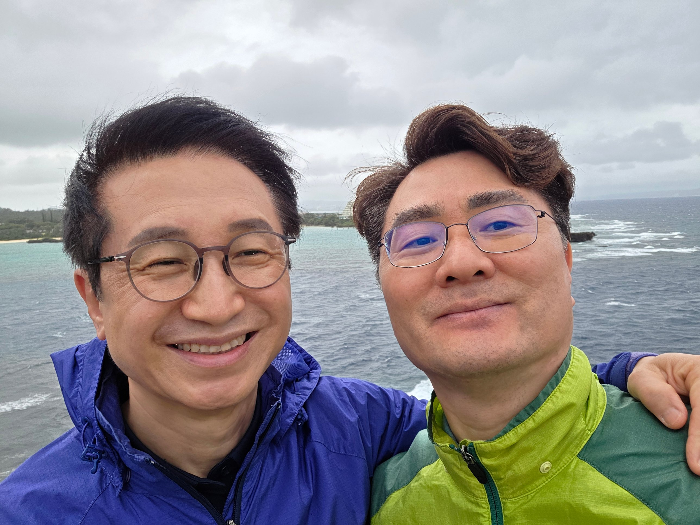
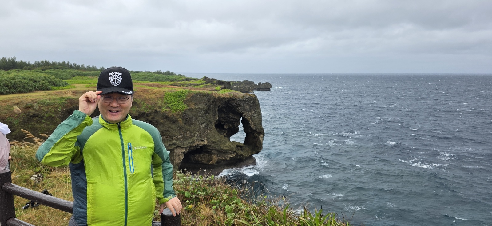

전국영남교직자협의회, 오키나와서 임원부부수련회
11월 25일까지 일본 오키나와 르와지르 호텔 나하에서 열리는 수련회는 대표회장 김종혁 목사의 개회예배 설교로 시작했고, 폐회예배 설교는 총회 부총회장 송기섭 목사가 맡는다.
대한예수교장로회 총회(이하 예장합동) 소속 교직자들이 참여하는 전국영남교직자협의회(대표회장 김종혁 목사)가 11월 23일 일본 오키나와 르와지르 호텔 나하에서 2026 임원부부수련회를 시작했다. 협의회 임원들과 배우자들이 함께하는 이번 수련회는 개회예배와 폐회예배, 현지 탐방 일정으로 진행된다.

개회예배, '위로부터 오는 지혜'
수련회는 11월 23일(월)부터 25일(수)까지 2박 3일 일정으로 열린다. 협의회가 펴낸 수련회 순서지에 따르면 23일 개회예배는 사무총장 피승민 목사의 인도로 드렸다.
참석자들은 사도신경으로 신앙을 고백하고 찬송가 369장 '죄짐 맡은 우리 구주'를 함께 불렀다. 증경상임회장 김경환 장로가 기도했고, 인도자가 야고보서 3장 13~18절을 봉독했다.
설교는 대표회장 김종혁 목사가 「위로부터 오는 지혜로 한 영혼을 얻으라!」라는 제목으로 전했다. 이어 사무총장 김성권 장로가 광고했고, 상임회장 예동열 목사의 축도로 예배를 마쳤다.

현지 탐방 일정
참석자들은 수련회 기간 오키나와의 자연과 도시를 둘러보는 탐방 일정도 함께하고 있다. 일행은 석회 동굴인 교쿠센도(玉泉洞)를 찾아 동굴 안 지형을 살펴봤다.


동굴 관람을 마친 참석자들은 탐방지 안 찻집 앞에 모여 다음 일정을 이어 갔다. 이후 나하 시내로 이동해 오키나와현청 앞 광장과 국제거리 일대를 걸었다.





수련회 순서지는 오키나와를 일본 최남단의 현으로, 최저기온이 영하로 내려가지 않는 아열대 기후 지역으로 소개했다. 현청 소재지는 나하시다.
폐회예배는 송기섭 부총회장 설교
25일 폐회예배는 상임부회장 박철수 목사가 인도한다. 참석자들은 찬송가 95장 '나의 기쁨 나의 소망 되신 주'를 부르고, 상임회장 이병우 장로가 기도한다.
설교는 총회 부총회장 송기섭 목사가 디모데전서 6장 6절을 본문으로 「자족하는 마음을 주소서」라는 제목으로 전한다. 본문은 "그러나 자족하는 마음이 있으면 경건은 큰 이익이 되느니라"(딤전 6:6)이다.
이어 대표회장 김종혁 목사가 인사하고 총무 박주일 장로가 광고한다. 수련회는 상임부회장 김한욱 목사의 축도를 끝으로 모든 일정을 마친다.
일시: 2026년 11월 23일(월)~25일(수)
장소: 일본 오키나와 르와지르 호텔 나하
개회예배 설교: 대표회장 김종혁 목사(야고보서 3장 13~18절)
폐회예배 설교: 총회 부총회장 송기섭 목사(디모데전서 6장 6절)
협의회 임원 구성
순서지에 실린 협의회 임원 명단에 따르면 대표회장은 김종혁 목사, 명예회장은 권순웅 목사다. 명단에는 증경회장과 증경상임회장, 상임회장, 상임부회장, 사무총장, 총무단, 서기·회계·감사 등이 이름을 올렸다.
영남 각 지역 노회의 노회장들은 협동총무로 참여했다. 순서지에는 경남·경동·부산·대구수성 등 각 노회 이름과 함께 협동총무 명단이 실렸다.